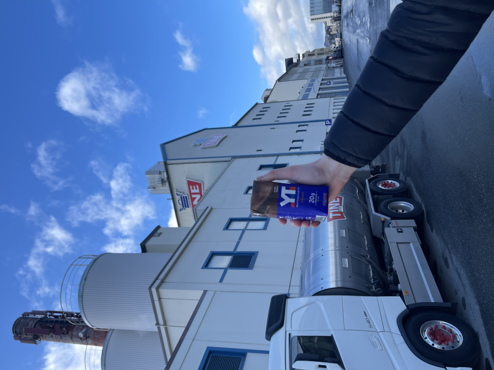

YT
YT er en serie med meieriprodukter fra TINE, utviklet spesielt for aktive mennesker som ønsker påfyll av energi og næring. Produktene inneholder ofte protein, vitaminer og mineraler som bidrar til restitusjon og ytelse, enten det er i form av proteinrike drikker, smoothies eller yoghurter. YT blir produsert på TINEs anlegg i Ålesund, hvor kvalitet og smak står i fokus for å sikre et sunt og godt alternativ for alle som er i bevegelse.
